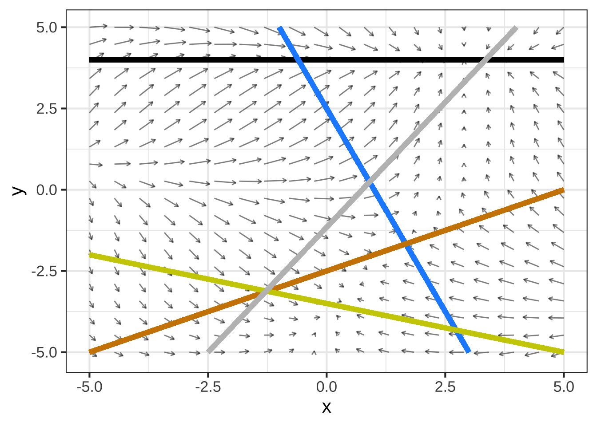
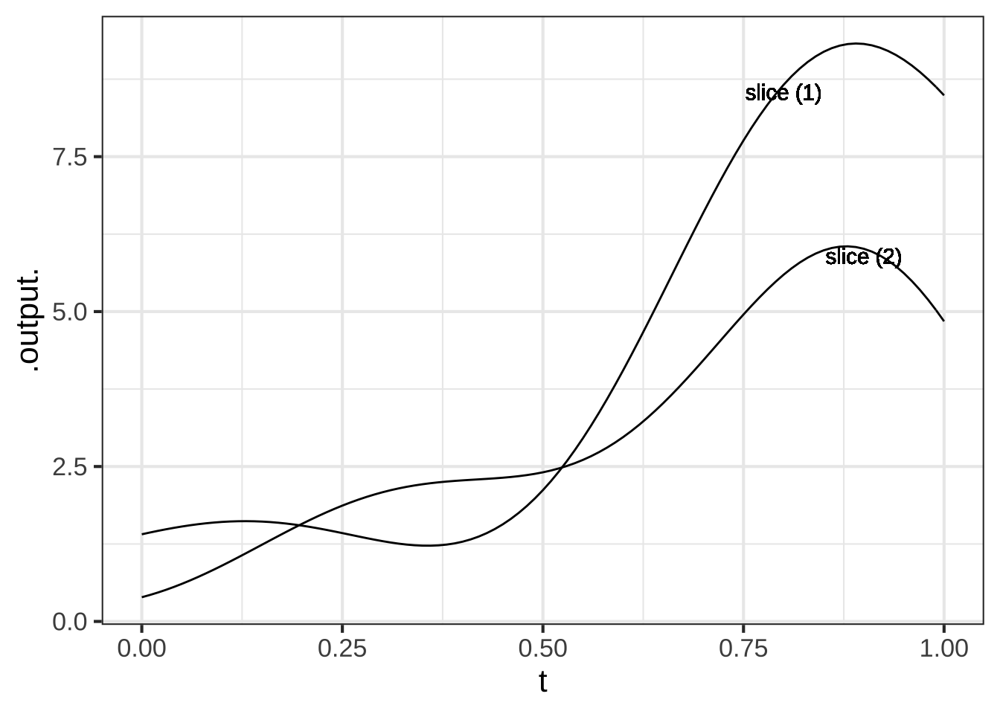

Chapter 12 Functions with multiple inputs
We can use linear combination and function multiplication to build up custom functions from the basic modeling functions. Similarly, linear combination and function multiplication provide ways to construct functions of multiple inputs.
12.1 f(x) times g(t)
For example, when a guitar string is at rest it forms a straight line connecting its two fixed ends: one set by finger pressure along the neck of the guitar and the other at the bridge near the center of the guitar body. When a guitar string is plucked, its oscillations follow a sinusoid pattern of displacement. With the right camera and lighting setup, we can see these oscillations in action:
For a string of length \(L\), the string displacement is a function of position \(x\) along the string and is a linear combination of functions of the form \[g_k(x) \equiv \sin(k \pi x /L)\] where \(k\) is an integer. A few of these functions are graphed in Figure 12.1 with \(k=1\), \(k=2\), and \(k=3\).

Figure 12.1: Vibrational modes of a guitar string.
Shapes of the sort in Figure 12.1 are a stop-motion flash snapshot of the string. The string’s shape also changes in time, so the string’s displacement is a function of both \(x\) and \(t\). The displacement itself is a sinusoid whose time period depends on the length and tension of the string as well as the number of cycles of the spatial sine: \[g_k(x, t) \equiv \sin(\frac{k \pi}{L} x) \ \sin(\frac{k \pi}{P}t)\] Figure 12.2 shows a few snapshots of the 1.5 cycle string at different moments in time, and the motion of the linear combination.


Figure 12.2: String position changes over time.
12.2 Two-variable modeling polynomial
In Section 11.3 we introduced the low-order polynomial, either \(g_1(x) \equiv a_0 + a_1 x\) or \(g_1(x) \equiv b_0 + b_1 x + b_2 x^2\) as a general-purpose way of generating a function with a smoothly curved shape. The same applies in constructing simple functions of two variables.
Almost always, you should use at least a first-order polynomial, which is: \[h_1(x, y) \equiv a_0 + a_x x + a_y y\] But there is an important extension of this, using what’s called a bilinear term or, more evocatively in statistics, an interaction term. This is \[h_2(x, y) \equiv \underbrace{b_0}_\text{intercept} + \underbrace{b_x\, x + b_y\, y}_\text{linear terms} + \underbrace{b_{xy}\,x\, y}_\text{bilinear term}\]
The bilinear term arises in models of phenemona such as the spread of epidemics, the population dynamics of predator and prey animals, and the rates of chemical reactions. In each of these situations one thing is interacting with another: a predator killing a prey animal, an infective individual meeting a person susceptible to the disease, one chemical compound reacting with another.
Under certain circumstances, modelers include one or both quadratic terms, as in \[h_3(x, y) \equiv c_0 + c_x\, x + c_y\, y + c_{xy}\,x\, y + \underbrace{c_{yy}\, y^2}_\text{quadratic in y}\] The skilled modeler can often deduce which terms to include from basic facts about the system being modeled. We’ll need some additional calculus concepts before we can explain this in a straightforward way.
In writing polynomials like \[h_1(x, y) \equiv a_0 + a_x x + a_y y\] or \[h_3(x, y) \equiv c_0 + c_x x + c_y\ y + c_{xy} x\ y\] we are using letters as subscripts on the coefficients. Think of \(c_x\) as saying, “I am the coefficient on the \(x\) term in the polynomial.” Using this style lets us use different letters from the start of the alphabet for the names of coefficients in the different polynomials while still making it clear which term each coefficient is scaling.
We left function composition out of the list of ways to build multivariable functions out of simpler functions with a single input.
For instance, consider the two functions \(f(x)\) and \(g(t)\). The composition \(f(g(t))\) has only one input: \(t\). Similarly, \(g(f(x))\) has only one input: \(x\).
12.3 Exercises
Exercise 12.1:  ICLSE
ICLSE
Many printed tables are meant to be used as functions; you plug in the input values and read off the output. Here’s a table published by the National Oceanic and Atmospheric Administration for the heat index, a way of summarizing the perceived comfort (or discomfort) of summer-like weather conditions.
Question A What are the inputs to the heat-index function
- temperature and relative humidityGood.
- temperature and wind speed︎✘ Those are the inputs to the wind-chill function, not the heat index.
- temperature, latitude, and longitude︎✘ The heat index doesn’t depend on location.
The table actually shows three different functions:
- The heat index in \(^\circ\) F.
- The heat index in \(^\circ\) C.
- A caution warning level.
Question B For inputs of 70% relative humidity and \(88^{\circ}\) F, what are the outputs of the three functions?
- \(100^{\circ}\) F, \(38^\circ\) C, and “extreme caution”.Correct.
- \(100^\circ\) F, \(38^\circ\) C, and “danger”.︎✘ Check again!
- \(100^\circ\) F, \(33^\circ\) C, and “extreme caution”.︎✘ 33C does is not the same temperature as 100F.
Question C Holding the relative humidity at 70%, how much would the ambient temperature have to increase (from \(88^\circ\) F) to change the caution-level output to “dangerous”?
- Increase by \(2^\circ\) FRight!
- Increase by \(6^\circ\) F︎✘ It looks like you’re increasing the humidity to the point where the heat index is \(106^circ\) F. But we asked you how much the temperature input has to change, not the heat-index output.
- Increase relative humidity to 80%.︎✘ It’s true that at \(100^\circ\) F and 80% humidity, the caution-index is “dangerous”. But the problem specified holding humidity constant.
Question D From a starting point of \(88^\circ\) F and 70% humidity, what is the slope of the increase in heat index when moving to 80% humidity.
- \(6^\circ\) F per 10 percentage points humidityNice!
- \(6^\circ\) F︎✘ A slope is always “rise over run”. You’ve got the rise right, but what about the run?
- \(6^\circ\) F per 80% humidity.︎✘ The slope is the change in output divided by the change in input, i.e. “rise over run”. 80% is the humidity at the endpoint, but the run is the change in humidity from the starting point to the endpoint.
Question E What is the heat-index output when the inputs are 52% relative humidity and \(91^\circ\) F? Choose the best answer.
- \(98.4^\circ\) FRight! Of course, the 4 in the last digit is sketchy, but it’s reasonable to calculate the interpolated output by averaging over neighboring outputs.
- \(101^\circ\) F︎✘ That’s the output at 55% humidity and \(92^\circ\) F.
- The table doesn’t say.︎✘ While it’s true that there is no table entry specifically for 52% and \(91^\circ\) F, you can make a very reasonable guess by interpolation, that is, reading between the rows and columns.
Question F True or false: The caution-level output could have been presented as a function of just one variable, rather than needing both temperature and humidity both.
- TRUEExcellent! The caution-level output is not a function of ambient temperature alone or of humidity alone. But if you know the heat-index, you know that caution level exactly.
- FALSE︎✘ Notice that the caution-level output is the same for any given level of the heat index, regardless of the ambient temperature or humidity separately.
The US National Weather Service also publishes a heat index graphic, the one below.

{kind=link}
Exercise 12.2: EDKKW
Recall the Pythagorean theorem: \(C^2 = A^2 + B^2\). Let’s write this as a function that takes as inputs the lengths of the two legs and produces as output the length of the hypotenuse.
\[\text{hypotenuse}(a, b) \equiv \sqrt{\strut a^2 + b^2}\]
This can be seen as a composition of a function \(f(x) \equiv \sqrt{x}\) into a linear combination of square functions of different inputs: \(g(a, b) \equiv a^2 + b^2\).
Question A What is the function \(f()\)?
- \(f(x) \equiv a^2\)︎✘ This wouldn’t make sense. The output of \(f()\) doesn’t depend on its input.
- \(f(x) \equiv \sqrt{x}\)Correct.
- \(f(x) \equiv x^2\)︎✘ This is part of the interior function, not the outer function.
- \(f(x) \equiv +\)︎✘ Sorry, but the output of the hypothenuse() function needs to be a quantity, and \(+\) is not a quantity.
Question B What is the function \(g()\)?
- \(g(x) \equiv a^2\)︎✘ This wouldn’t make sense. The output of \(f()\) doesn’t depend on its input.
- \(g(a) \equiv x^2\)︎✘ This wouldn’t make sense. The output of \(f()\) doesn’t depend on its input.
- \(g(x) \equiv x^2\)Excellent! Right, a power-law function. It doesn’t matter what we call the input, so long as it’s used consistently in the definition.
- \(g(x) \equiv a^2 + b^2\)︎✘ Sorry, but the input name is \(x\) and the formula on the right side of the tilde expression has \(a\) and \(b\) in it.
Question C There are two functions in the linear combination. What are they?
\(g(a)\) and \(g(b)\)\(\heartsuit\ \) \(f(x)\) and \(g(x)\)︎✘ \(f(b)\) and \(g(b)\)︎✘
Question D What are the scalars in the linear combination?
- \(1\) and \(1\)Correct.
- \(1\) and \(-1\)︎✘
- There are no scalars.︎✘ I think I know what you’re getting at. The tradition in mathematics is that when a scalar is \(1\), we don’t write it down. But still, the scalar is \(1\).
You used \(a\) and \(b\) as the names of the inputs to hypotenuse(). Aren’t \(a\) and \(b\) meant to be parameters, not input names?
You can use whatever you want as input names, so long as they are used consistently between the left and right sides of the \(\\equiv\). Names like \(x\), \(t\), and \(y\) scream out to be recognized as input names, so these are what we use most of the time. But the Pythagorean theorem is usually written using A, B, and C. I’m honoring that convention so that a human reader gets a cultural hint what the inputs stand for. I’m unapologetic about this, since you got fair warning by the left side of the \(\\equiv\) what the argument names are.
Exercise 12.4: dB1r5F
Auckland, New Zealand is in a field of dormant volcanos. The highest, at 193 meters above sea level, is Maungawhau. Formerly, tourists could drive to the peak and look down into the crater, as seen in the picture.
Figure 12.3: The crater of Maungawhau, near Auckland, New Zealand. Source
{kind=link}
The initial creator of R, Ross Ihaka, teaches at the University of Auckland. His digitization of a topographic map is easily plotted, as here:
Figure 12.4: A combination surface and contour plot of the topography of Maungawhau.
The z-axis is height and is in meters. The x- and y-axes are latitude and longitude, measured in 10-meter units from a reference point. (So, \(x=10\) is 100 meters from \(x=20\).)
Get used to the presentation of the surface plot and how to rotate it and zoom in. To see the crater clearly, you can rotate the surface plot to look straight downwards, effectively presenting you with a color-coded contour plot. Moving the cursor over the surface will display the \(x\) and \(y\) coordinates, as well as the \(z\)-value at that coordinate point.
Question A What is the \((x, y)\) location of the low-point of the crater? (Choose the closest answer.)
\((x=34, y=29)\)\(\heartsuit\ \) \((x=31, y=25)\)︎✘ \((x=25, y=34)\)︎✘ \((x=29, y=34)\)︎✘
Question B What color is used to designate the lowest elevations?
dark blue\(\heartsuit\ \) green︎✘ yellow︎✘
If you were to climb up Maungawhau, at some point you would be at the same elevation as the low-point of the crater, even though you are outside the crater. Think of the contour that corresponds to that elevation. Let’s call it the “half-way” contour since it’s roughly half-way up the volcano.
Question C What is the shape of the “half-way” contour?
a line segment︎✘ a crescent︎✘ a closed curve\(\heartsuit\ \) a cross︎✘
Imagine that you are filling up the crater with water. At some point, the water rises to a level where it will spill over the lip of the crater.
Question D What is the elevation at which the water will start to spill over the crater lip? (Pick the closest answer.)
169 meters\(\heartsuit\ \) 172 meters︎✘ 175 meters︎✘ 178 meters︎✘
Question E Explain in terms of the shapes of contours how you can identify the elevation at which the water would spill over the rim.
Exercise 12.5: drawing
We’ve created a function named \(\text{twins}(x,y)\) to help you practice making contour plots. You’ll need to open a sandbox to draw the plot.
Here is some scaffolding for the command:
twins <- mosaic::rfun(~ x + y, seed = 302, n=5)
contour_plot(twins(x, y) ~ x + y, domain(x=c(0,1), y=c(-1,1)))
Question A The domain of the plot should be large enough to show a mountain next to a deep hole. Which of these domains will do the job?
domain(x=c(-5, 5), y=c(-5, 5)Right!
domain(x=c(1, 5), y=c(1, 5)︎✘ This shows the mountain, but not the hole.
domain(x=c(1,1), y=c(-1,1)))︎✘ Some of the hole is shown, but none of the mountain.
domain(x=c(5,10), y=c(0,10)))︎✘ There’s hardly anything going on in this domain. The function here is pretty flat except for a dip in the lower left.
In a different sandbox (so you can still see the contour plot in the first sandbox), draw a slice through the function along the line \(y=0\). Use the same \(x\)-domain as in the correct answer to the previous question.
In the slice_plot() command below, you will need to replace __tilde-expression___ and __domain__ with the correct syntax.
twins <- mosaic::rfun(~ x + y, seed = 302, n=5)
slice_plot(__tilde-expression__, __domain__)Question B Which of these expressions will accomplish the task?
slice_plot(twins(x, y=0) ~ x, domain(x=c(-5,5)))Excellent!
slice_plot(twins(x) ~ x, domain(y=c(-5, 5)))︎✘ The domain should be over \(x\), not \(y\). Andtwins()takes two inputs, even if one of them is fixed at zero.
slice_plot(twins(x, y=0) ~ x, domain(x=c(-5, 5), y=c(-5, 5)))︎✘ A slice plot has a domain that includes only one input.
slice_plot(twins(x, y=0) ~ x + y, domain(x=c(-5, 5), y=c(-5, 5)))︎✘ A slice plot has only one input on the right side of the tilde expression.
Exercise 12.6: daylength
Consider this graph of the length of the day at different levels of latitude and different days of the year. Source.

First, orient yourself to the graph and what the contours mean. Note the vertical lines indicating the days of the equinoxes and solstices.
Question A True or False: There is a place on the equator when the day length is exactly 12 hours at some time of year.
- TRUE︎✘ If there were, the horizontal (dashed) line denoting the equator would cross the 12-hour contour. It doesn’t.
- FALSENice! Since the dashed equator line no where overlaps with the 12-hour contour line, there is no time of year when the length of day on the equator is exactly 12 hours. Presumably this is because daylight starts somewhat before the sun rises above the horizon and ends somewhat after the sun goes below the horizon.
The word “equinox” comes from the Latin for “equal night.”
Question B True or False: To judge from the contour plot, on the equinox every latitude has a length of day somewhat longer than the length of night.
- TRUENice!
- FALSE︎✘ Note that neither of the lines for the March or September equinoxes cross the 12-hour length-of-day contour.
Question C US Air Force Academy is at latitude 38.9983° N. Reading from the contour plot, roughly what is the length (in hours) of the longest day of the year?
13︎✘ 14︎✘ 15\(\heartsuit\ \) 16︎✘ 17︎✘ 18︎✘ 19︎✘
Exercise 12.7: kelxlB
The contour plot below is marked with several colored lines which represent slices through the surface. Your job is to match these up with the slice plots presented below.

In the slice plots, the input \(t\) reflects the position on the slice. At \(t=0\), position is at the leftmost point of the slice, while at \(t=1\) position is at the right terminus of the slice.
Question A Which color line corresponds to slice 1?
black︎✘ gray︎✘ blue︎✘ tan\(\heartsuit\ \) yellow︎✘
Question B Which color line corresponds to slice 2?
black︎✘ gray\(\heartsuit\ \) blue︎✘ tan︎✘ yellow︎✘
Question C Which color line corresponds to slice 3?
black\(\heartsuit\ \) gray︎✘ blue︎✘ tan︎✘ yellow︎✘
Question D Which color line corresponds to slice 4?
black︎✘ gray︎✘ blue︎✘ tan︎✘ yellow\(\heartsuit\ \)
Exercise 12.8: ticlw
The gradient plot below is marked with several colored lines which represent slices through the surface. Your job is to match these up with the slice plots presented below.


In the slice plots, the input \(t\) reflects the position on the slice. At \(t=0\), position is at the leftmost point of the slice, while at \(t=1\) position is at the right terminus of the slice.
Question A Which color line corresponds to slice 1?
black︎✘ gray\(\heartsuit\ \) blue︎✘ tan︎✘ yellow︎✘
Question B Which color line corresponds to slice 2?
black︎✘ gray︎✘ blue\(\heartsuit\ \) tan︎✘ yellow︎✘
Question C Which color line corresponds to slice 3?
black︎✘ gray︎✘ blue︎✘ tan︎✘ yellow\(\heartsuit\ \)
Question D Which color line corresponds to slice 4?
black︎✘ gray︎✘ blue︎✘ tan\(\heartsuit\ \) yellow︎✘